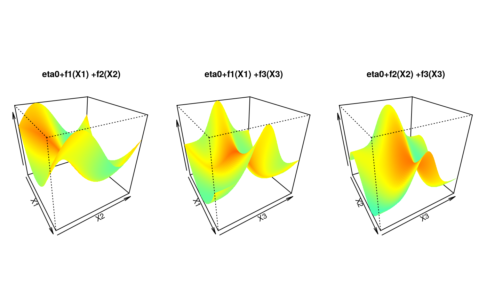

Simulates from a conditional bivariate copula, where each copula parameter takes a different value, depending on the calibration function and covariates.
condBiCopSim(family, calib.fnc, X, par2 = 0, return.par = TRUE, tau = TRUE)
| family | family A copula family:
|
|---|---|
| calib.fnc | A calibration function. |
| X | A vector (if |
| par2 | The second copula parameter (for the Student t), default
|
| return.par | Should the parameter (and calibration function) be returned
as well (default |
| tau | Should the calibration function (and the model) be specified for
the copula parameter or Kendall's tau (default |
If return.par = TRUE, then the function returns a list with:
data, a matrix with two columns containing the simulated data,
par, a vector containing the values of the copula parameter,
and eta, a vector containing the values of the
calibration function.
If return.par = FALSE, then the function simply returns data,
a matrix with two columns containing the simulated data.
gamBiCopFit and gamBiCopSimulate.
require(copula)#>set.seed(0) ## Simulation parameters (sample size, correlation between covariates, ## Gaussian copula family) n <- 2e2 rho <- 0.5 fam <- 1 ## A calibration surface depending on three variables eta0 <- 1 calib.surf <- list( calib.quad <- function(t, Ti = 0, Tf = 1, b = 8) { Tm <- (Tf - Ti)/2 a <- -(b/3) * (Tf^2 - 3 * Tf * Tm + 3 * Tm^2) return(a + b * (t - Tm)^2)}, calib.sin <- function(t, Ti = 0, Tf = 1, b = 1, f = 1) { a <- b * (1 - 2 * Tf * pi/(f * Tf * pi + cos(2 * f * pi * (Tf - Ti)) - cos(2 * f * pi * Ti))) return((a + b)/2 + (b - a) * sin(2 * f * pi * (t - Ti))/2)}, calib.exp <- function(t, Ti = 0, Tf = 1, b = 2, s = Tf/8) { Tm <- (Tf - Ti)/2 a <- (b * s * sqrt(2 * pi)/Tf) * (pnorm(0, Tm, s) - pnorm(Tf, Tm, s)) return(a + b * exp(-(t - Tm)^2/(2 * s^2)))}) ## Display the calibration surface par(mfrow = c(1, 3), pty = "s", mar = c(1, 1, 4, 1)) u <- seq(0, 1, length.out = 100) sel <- matrix(c(1, 1, 2, 2, 3, 3), ncol = 2) jet.colors <- colorRamp(c("#00007F", "blue", "#007FFF", "cyan", "#7FFF7F", "yellow", "#FF7F00", "red", "#7F0000")) jet <- function(x) rgb(jet.colors(exp(x/3)/(1 + exp(x/3))), maxColorValue = 255) for (k in 1:3) { tmp <- outer(u, u, function(x, y) eta0 + calib.surf[[sel[k,1]]](x) + calib.surf[[sel[k, 2]]](y)) persp(u, u, tmp, border = NA, theta = 60, phi = 30, zlab = "", col = matrix(jet(tmp), nrow = 100), xlab = paste("X", sel[k, 1], sep = ""), ylab = paste("X", sel[k,2], sep = ""), main = paste("eta0+f", sel[k, 1], "(X", sel[k, 1], ") +f",sel[k, 2], "(X", sel[k, 2], ")", sep = "")) }## 3-dimensional matrix X of covariates covariates.distr <- mvdc(normalCopula(rho, dim = 3), c("unif"), list(list(min = 0, max = 1)), marginsIdentical = TRUE) X <- rMvdc(n, covariates.distr) ## U in [0,1]x[0,1] with copula parameter depending on X U <- condBiCopSim(fam, function(x1,x2,x3) {eta0+sum(mapply(function(f,x) f(x), calib.surf, c(x1,x2,x3)))}, X[,1:3], par2 = 6, return.par = TRUE) ## Merge U and X data <- data.frame(U$data,X) names(data) <- c(paste("u",1:2,sep=""),paste("x",1:3,sep="")) ## Display the data dev.off()#> null device #> 1plot(data[, "u1"], data[, "u2"], xlab = "U1", ylab = "U2")